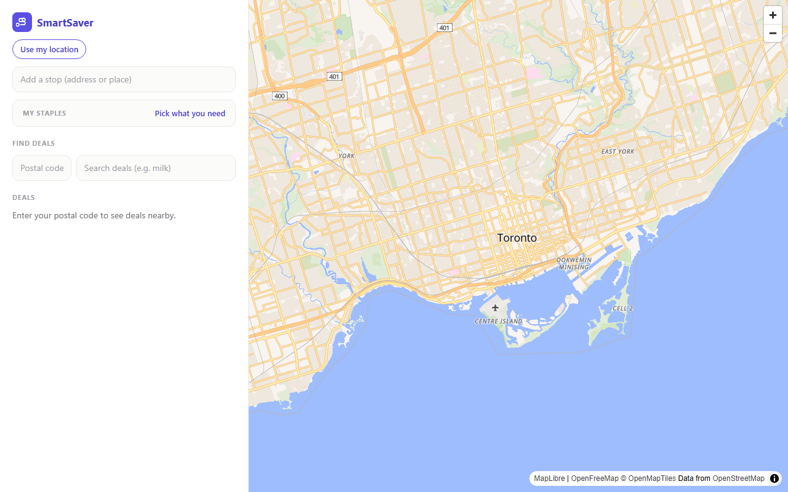
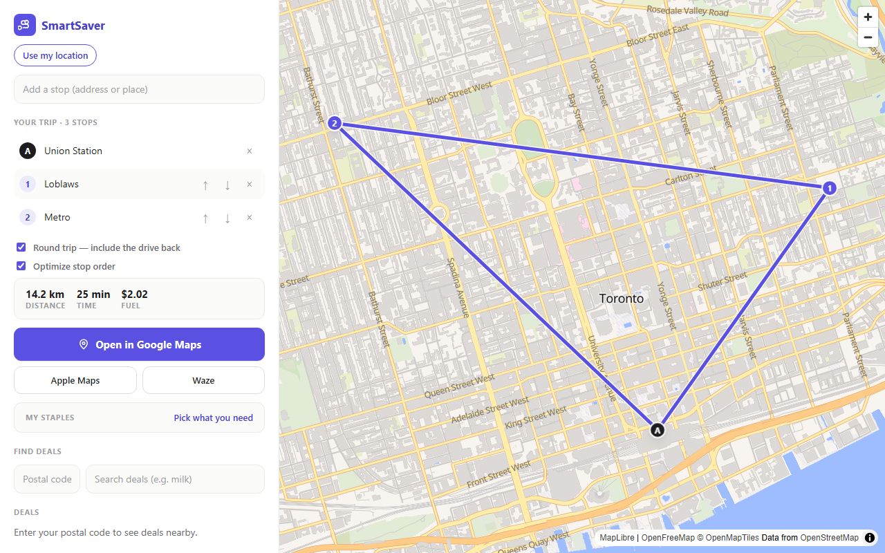
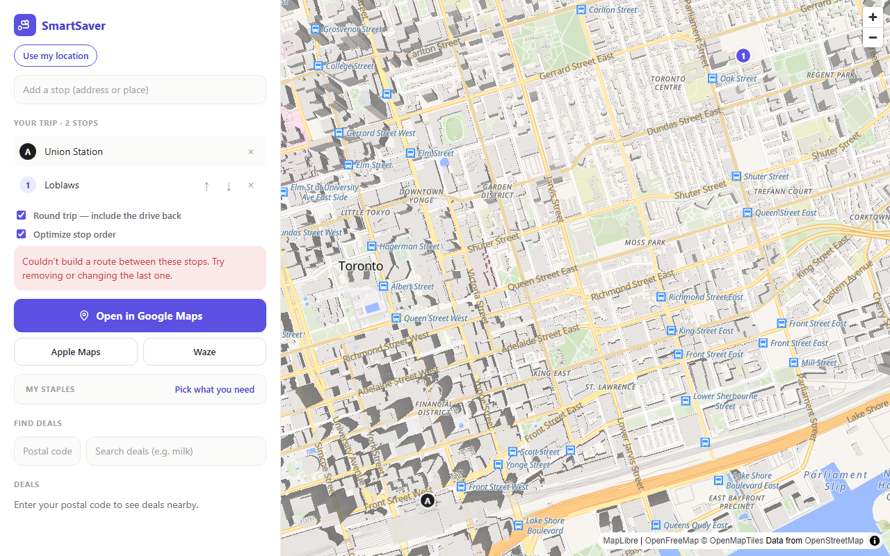
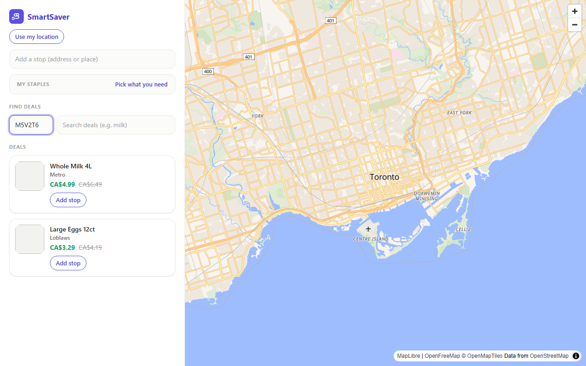
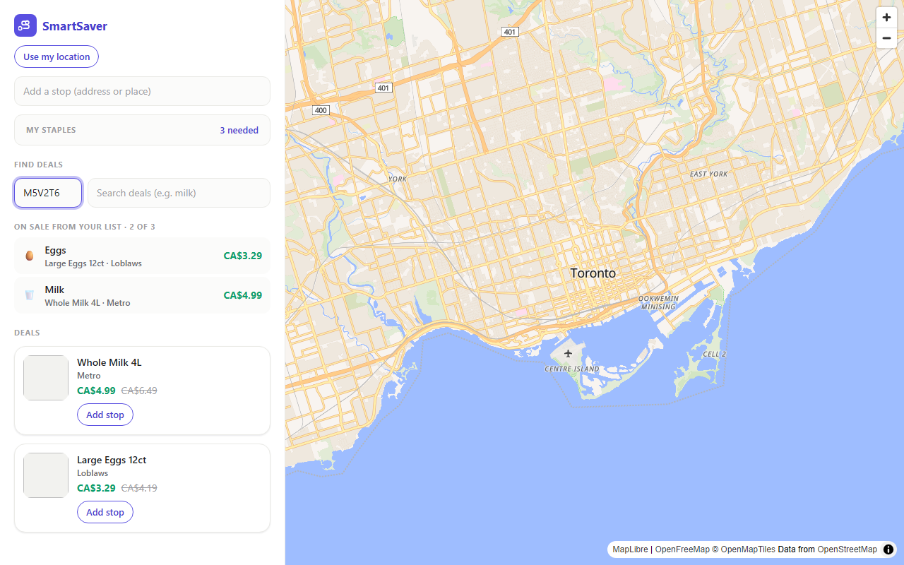
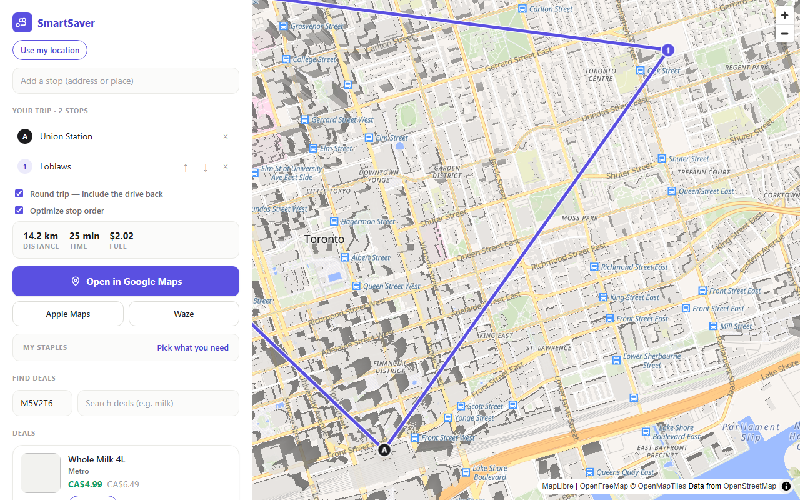
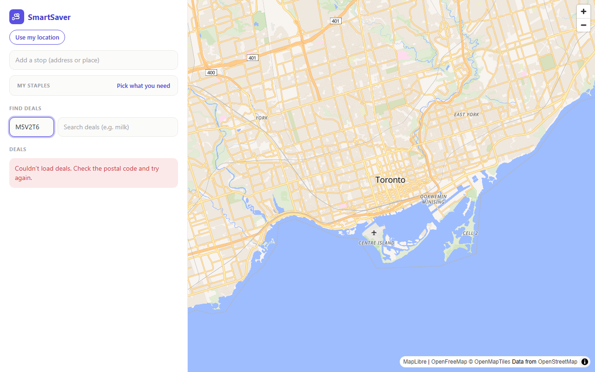

User States
Screenshots are captured from the running web app by npm run docs:screenshots
(Playwright). Add a state to STATES in docs/screenshots.mjs as each screen ships.
Implemented screens for the SmartSaver — Web App Build Plan (apps/web) build plan; see Getting Started for capturing them.
Home
Empty state: prompts for a postal code, with the map centered on Toronto.

Stops and route
Three stops added through the place search: A is the origin, then numbered stops. The map fits all markers and draws the route; the summary shows distance, time and fuel, with the “Open in Google Maps” handoff below it. Screenshot uses mocked Nominatim and OSRM data.

Route error
Shown when OSRM cannot build a route. The stops stay in place and no polyline is drawn.

Deals
Results for a postal code from /api/deals. Screenshot uses mocked data.

List matches
Milk, Eggs and Bread marked needed in “My Staples”, then a deals search: the two items on sale show with their cheapest deal; Bread is counted as a miss (“2 of 3”). Screenshot uses mocked deals.

Deal added as a stop
“Add stop” on a deal finds the nearest matching grocer from /api/stores and adds it to the trip; the button shows “Added ✓” and the route recomputes. Screenshot uses mocked deals, stores, Nominatim and OSRM data.

Deals error
Shown when /api/deals fails (for example an invalid postal code returns 400).
